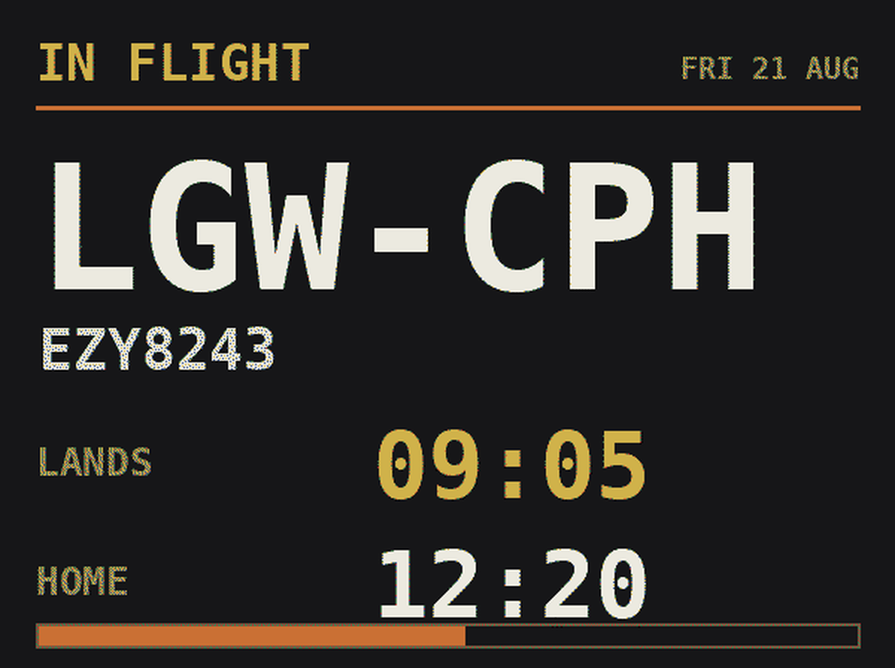
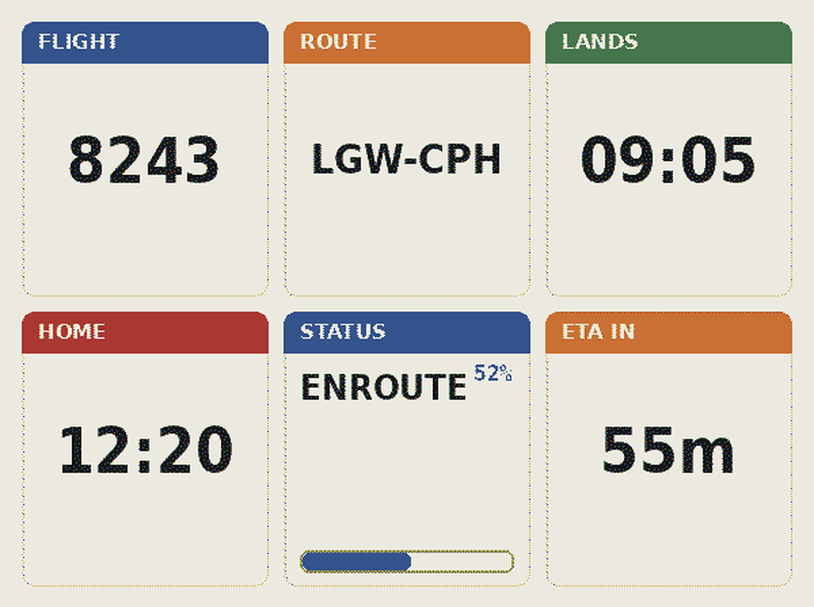
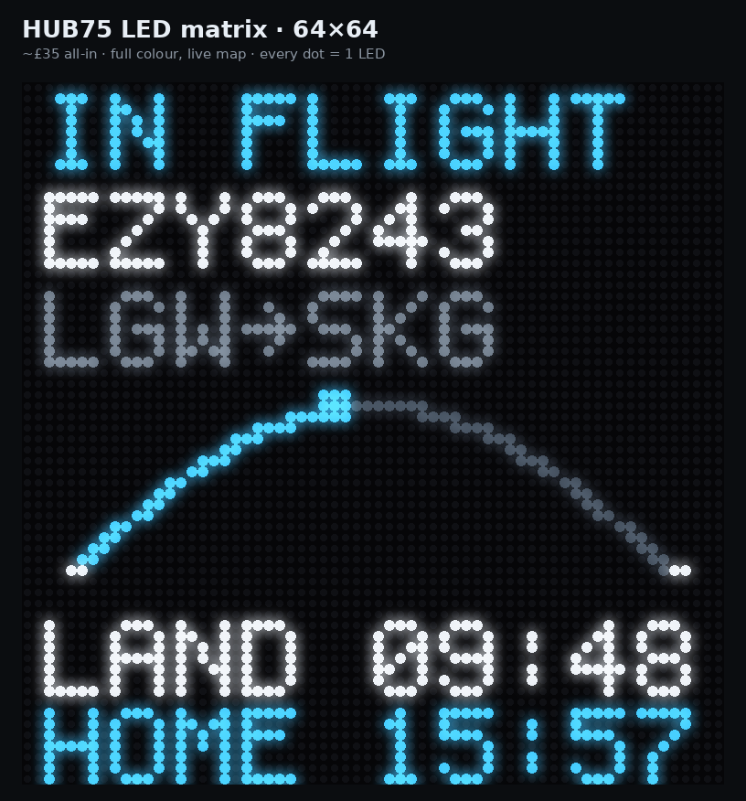
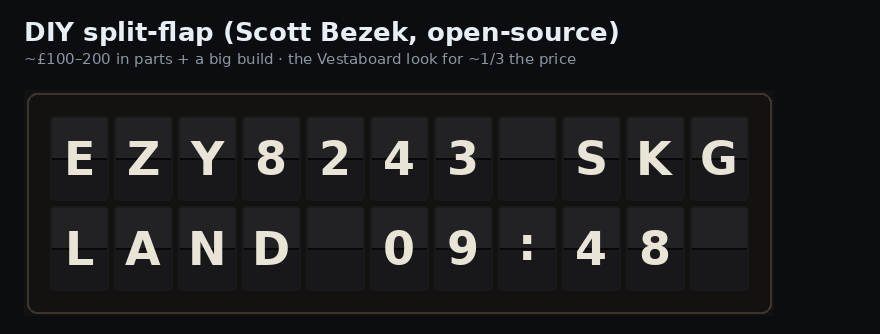
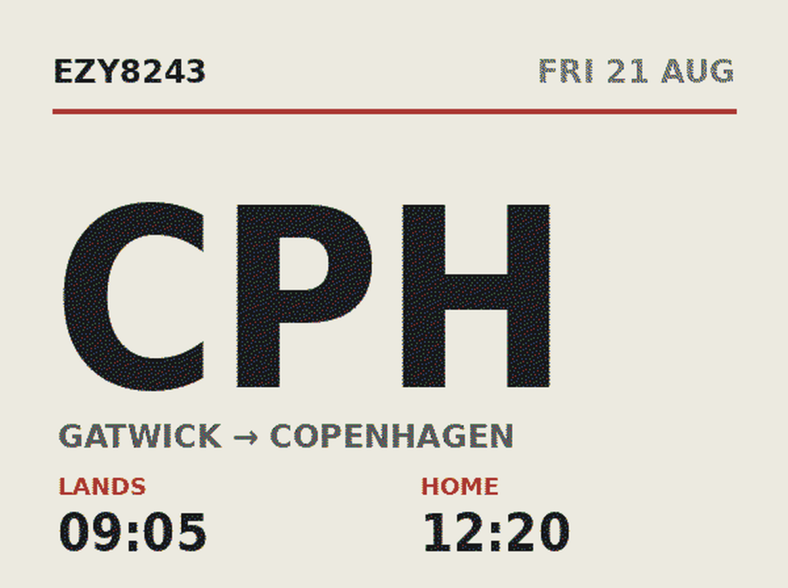
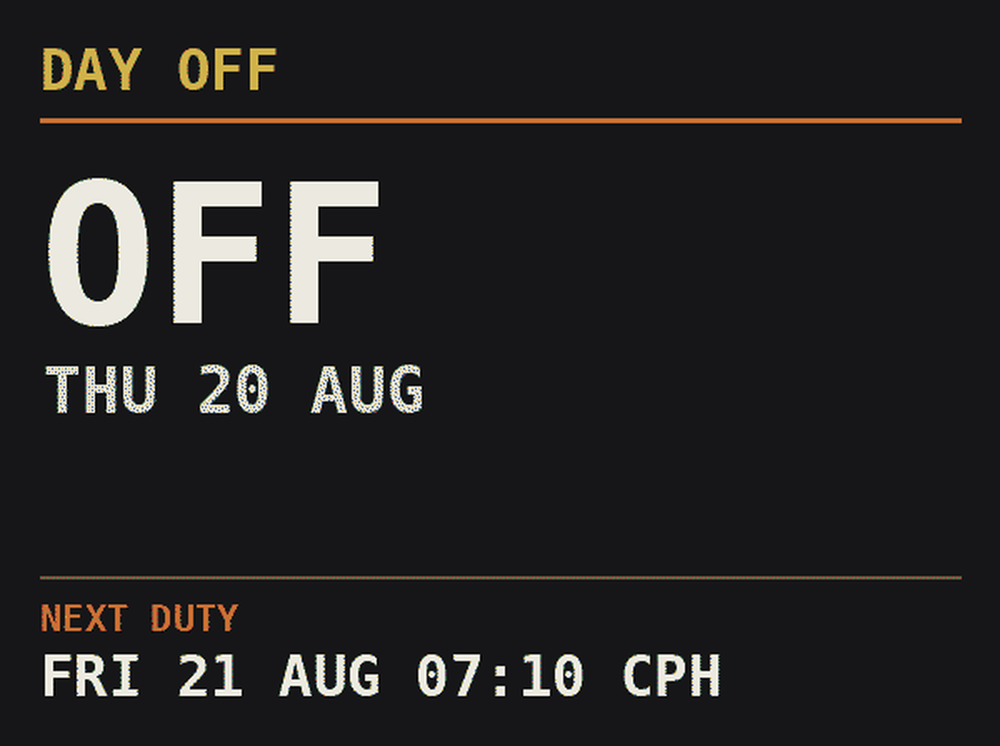

Ident reads your airline roster and shows your next flight and report time. Once you're airborne it tracks the sector you're actually on and gives you a live estimated time home next to the landing ETA.

Everything is driven by your actual duty schedule, stored in UTC and converted on the fly.
Primary path is an iCal feed from eCrew — point it at the .ics URL and it re-pulls itself every 30 minutes, so a roster change appears on the wall without you touching anything. Fallback: upload the eCrew Personal Crew Schedule Report PDF (or any .ics) on the web page.
A state machine picks the right screen for where you are in the duty cycle:
While airborne it polls a flight-tracking provider for the active sector, merging real position, actual times and ETA — so the wall and the home estimate follow reality, not just the schedule.
on-chocks → +30 debrief → +walk → +commute
Commute is a slider, or an optional live Google Maps drive time worked out at debrief o'clock.
Stores everything in UTC and shows UTC, Local Base or Local Station at the flick of a toggle.
A Flask panel on port 8080 for uploads, sliders, the style picker and the timezone toggle — plus a live preview of the wall with a time-travel field to see what it'll show when you land. Optional username/password login, so it can be reached from away without leaving it open.
Four side buttons: power, cycle style, contrast, and a next-duty card — a quick glance at tomorrow's report time and sectors without touching a phone.
Pre-load hotel or crashpad Wi-Fi from the panel while you're still on a working network, and it joins automatically when you arrive. Non-flying codes like WFTU are read as days off.
The reference build is a Raspberry Pi Zero 2 W behind a 5.7″ seven-colour Inky Impression — paper-like, near-zero power, and it holds its image even with the power off. Other renderers are selectable in the control panel.

Thirteen selectable looks, picked from a thumbnail grid in the panel: departure boards, a tiles dashboard, a minimal XL destination, a duty timeline, and geographic route maps.

128×32 shows a full-width route map with a moving marker; a single 64×32 works too, with more truncation on long routes. Needs hzeller's rpi-rgb-led-matrix built on the Pi.

A 6×22 character renderer for the text states, with the route reduced to a coarse chip-based progress bar. Great for text, weak for a smooth live map.
Every style is state-aware — the same screen knows whether you're on a day off, heading to report, airborne or on your way home. Switch styles from the panel, or cycle them with a button on the side of the frame.

One enormous destination code and the two times that matter. Readable from across the room.
The whole duty as one bar — report, each sector, then home — with a NOW marker. Best on multi-sector days.

Today's date up top, and a clearly separated next duty block below — date, report time and where you're going.
Polled only while airborne — a handful of calls per duty — so free/cheap tiers are plenty. Set the provider and key under Advanced.
| Provider | What it's good for |
|---|---|
| AeroDataBox | Default (via RapidAPI). Query by flight number; returns predicted ETA and actual times — the most direct fit for landing time and the home estimate. Small free tier. |
| Flightradar24 API | Excellent live position for the route-map marker, filtered by flight number. A separate credit-billed product from the FR24 website subscription; has a free sandbox and hobby tier. |
| OpenSky | Free ADS-B positions matched by callsign. easyJet callsigns often differ from the flight number, so matches can miss — a free fallback. |
| None | Schedule only, no live calls. |
The wall works fully on the schedule alone. Live tracking, Google Maps commute time, the physical LED output and the Vestaboard API all need your own keys/hardware and a little tuning on first run.
The simulator renderer runs anywhere and previews the wall in your browser.
python3 -m venv .venv && source .venv/bin/activate pip install -r requirements.txt python -m ident.main # simulator + web panel on :8080
Open http://localhost:8080, drop in your roster, and the wall renders live. For real panels on a Raspberry Pi you additionally build hzeller's rpi-rgb-led-matrix library (it isn't on PyPI) — see the README and INSTALL_PI.md. A step-by-step, no-experience-needed Beginner's Guide covers the e-paper build end to end.